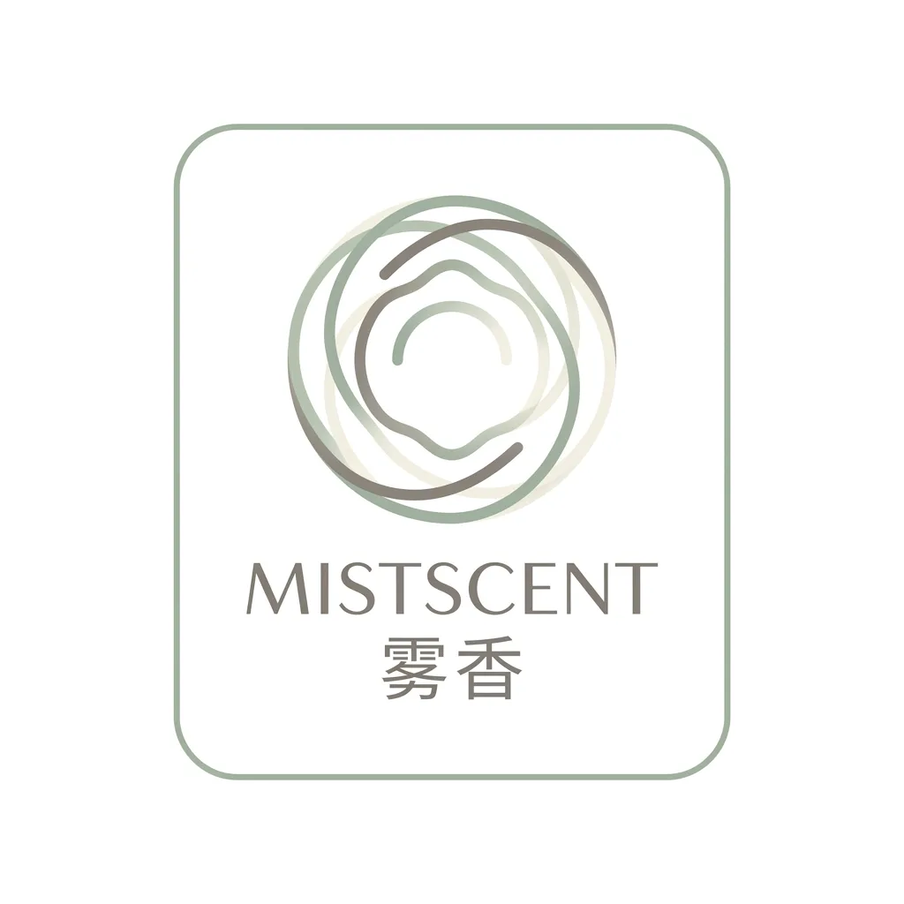
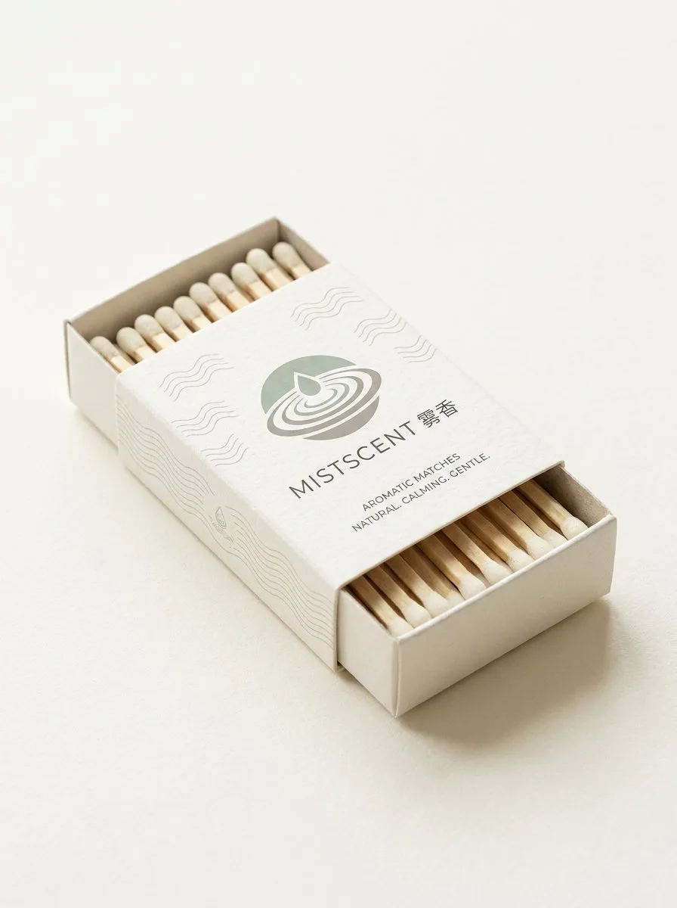
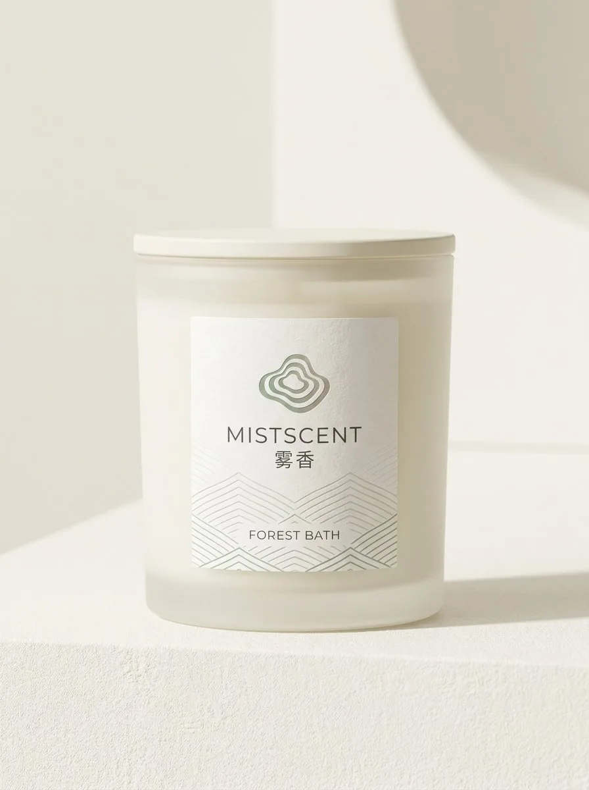
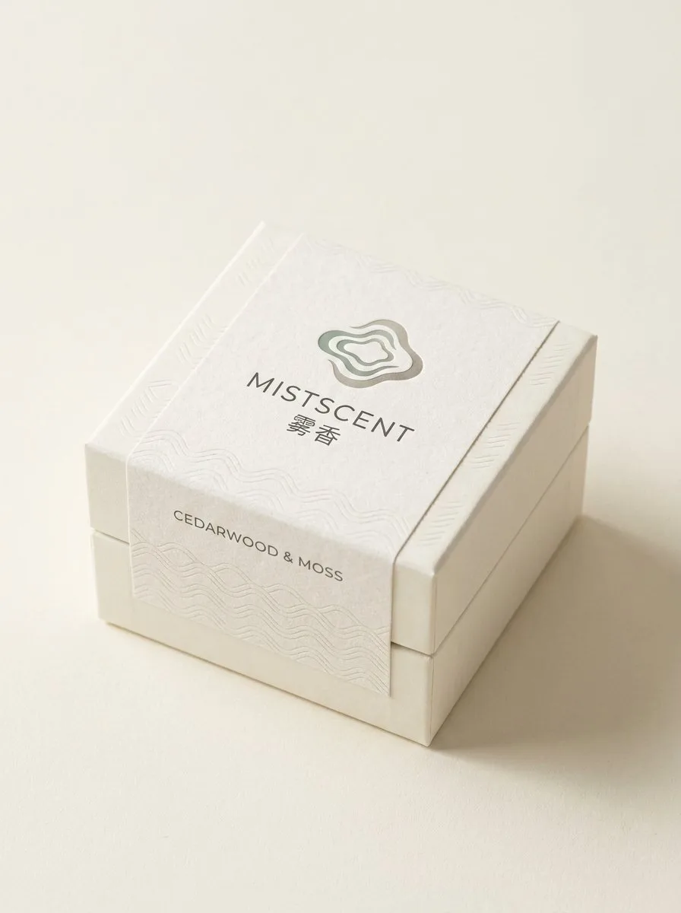

Brand & Space / PROJECT 20
MISTSCENT
MISTSCENT · 雾香
面向「气味疗愈」人群的精品香薰蜡烛品牌。
- ROLE
- 品牌识别与视觉系统设计
- TIME
- 项目年份待确认
- TOOLS
- 设计工具清单未提供
- TYPE
- Visual design study
- STATUS
- Independent visual study

01 / ONE-LINE CONCEPT
One-line concept
面向「气味疗愈」人群的精品香薰蜡烛品牌。
02 / VISUAL SYSTEM
Visual system
- 视觉母题：手绘水波纹 + 涟漪 Logo（同心不规则圆环）
- 主色：雾绿 / 米白 / 浅褐，主张「像雾一样」的不打扰设计
- 产品线：香薰蜡烛（玻璃杯）/ 香薰蜡片（旅行装）/ 芳疗火柴
- 包装延展：玻璃杯贴标、瓦楞纸盒、牛皮纸手提袋、礼盒、蜡封贴纸




05 / FINAL OUTPUT
Final output
面向「气味疗愈」人群的精品香薰蜡烛品牌。整套系统以「水波涟漪 + 雾」为视觉母题，强调克制、留白与自然质感——所有包装几乎不用彩色，主色调由低饱和的莫兰迪绿与米白构成。
CONTINUE EXPLORING